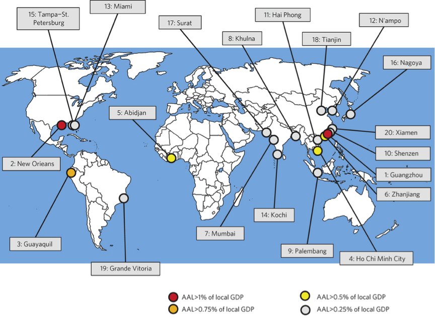
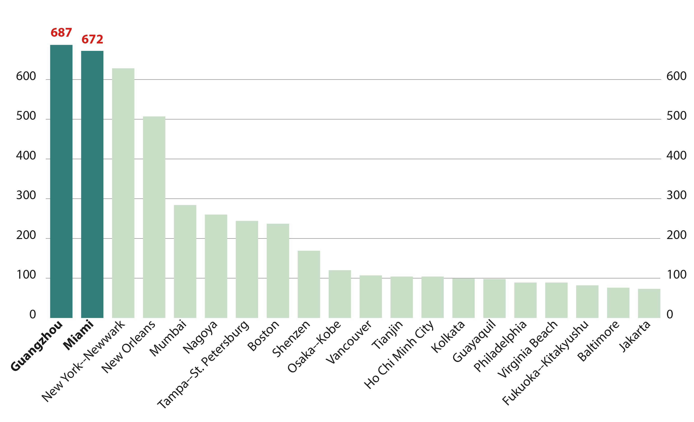
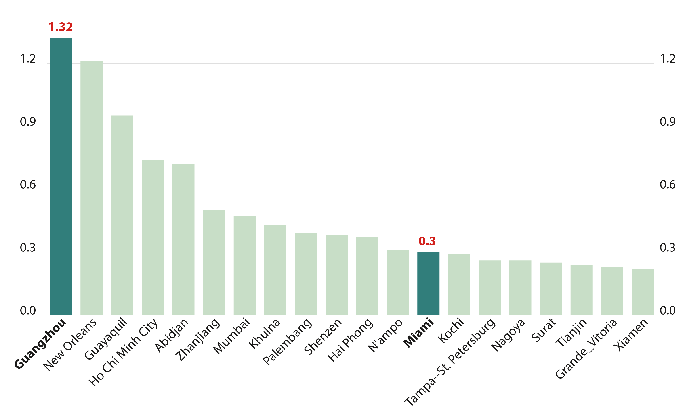
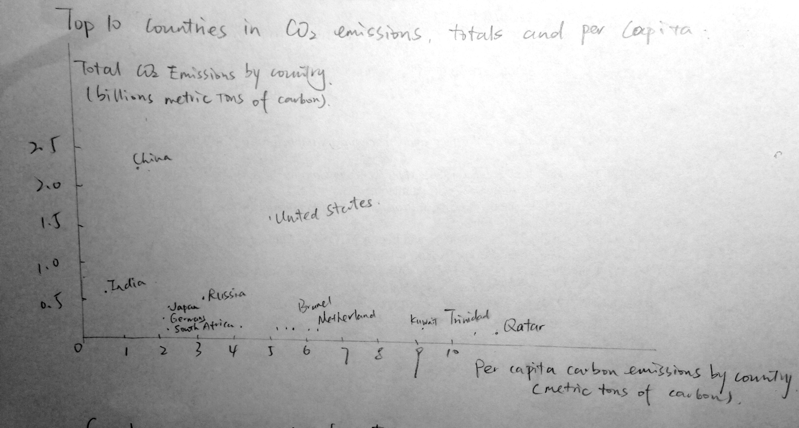
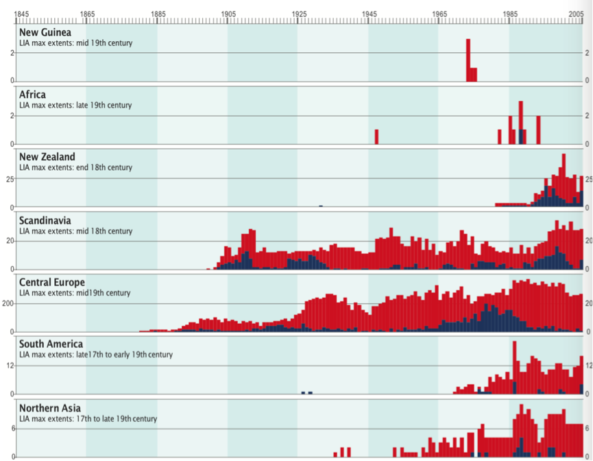
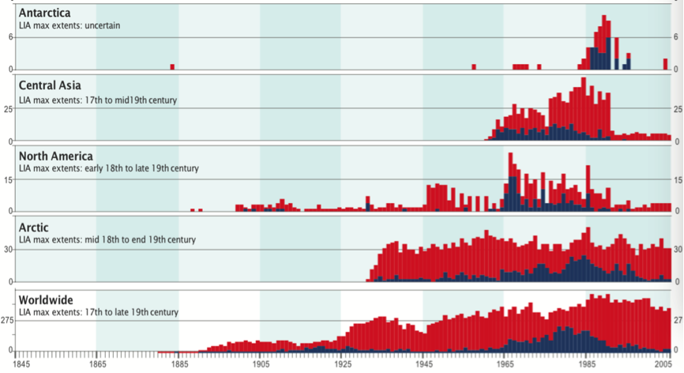

Global Warming
Infographics and Data Visualization
Areas Most Threatened by Sea Level Rise
The 20 cities where the relative risk is larger in 2005, that is, where the ratio of AAL with respect to local GDP is the largest.
What Are the Economic Consequences?
AAL is one of the key indicators of economic risk that a country faces from sea level rise. Cities are ranked by both absolute AAL and relative AAL (percentage of GDP).
2005 AAL with Protection ($millions) 
2005 AAL with Protection (% of City GDP) 
Drivers of Climate Change
Radiative Forcing
Radiative Forcing (RF) is the measure of change in atmospheric energy due to greenhouse gas emissions. Positive RF leads to surface warming, while negative RF leads to surface cooling. The increase in carbon dioxide concentration since 1750 is the largest contributor to total RF. The growth in CO2 concentration is due primarily to fossil fuel consumption and a change in land use.
Top Five Offenders
| # | Country | CO2 Emissions - Thousands of Tonnes |
|---|---|---|
| 1 | China | 2,625,730 |
| 2 | US | 1,396,791 |
| 3 | India | 611,226 |
| 4 | Russia | 491,840 |
| 5 | Japan | 342,270 |
Top Five Offenders
| # | Country | CO2 Emissions - Tonnes per Capita |
|---|---|---|
| 1 | Qatar | 12.03 |
| 2 | Trinidad & Tobago | 9.60 |
| 3 | Kuwait | 8.11 |
| 4 | United Arab Emirates | 5.08 |
| 5 | Saudi Arabia | 4.87 |
- Fossil Fuel Consumption 
{kind=link}
The Greenhouse Effect
Increasing emissions of greenhouse gases (fossil fuels, carbon dioxide) due to human activity has led to a build up in the atmosphere that absorbs and emits infrared thermal radiation which is then redirected back at the planet.
A Closer Look at Greenhouse Gases
An alarming trend can be seen when examining the global atmospheric concentration of certain greenhouse gases. CO2, methane and nitrous oxide have grown steadily in their atmospheric concentration as a result of fossil-fuel use.
These gases are measured in PPM (parts per million) or PPB (parts per billion), which denotes the ratio of gas molecules to other atmospheric molecules. Other things equal, an increase in concentration of these greenhouse gases results in sea level rise, global average temperature rise, and glacial melting.
{kind=link}
Consequences of Global Warming
- Thermal expansion - Ocean becoming warmer
- Global average temperature increase
- Sea level rise
- Glacial ice melting
Ice-Albedo Feedback
Albedo simply means reflection and the ice albedo refers to the reflectivity of the ice. Essentially ice reflects solar radiation back into space. The more ice and white snow covering an area, the more light is reflected. Water in the ocean on the other hand, reflects less and absorbs more solar radiation due to a lower albedo Due to climate changes such as the “Greenhouse Effect”.
Water absorbs radiation from the sun, increasing temperature and quickening the melting of glaciers. As glacial ice dissipates, melting occurs more rapidly.
Due to the Greenhouse Effect the ice caps on the poles are melting faster than ever before causing the solar radiation to be absorbed in the newly exposed areas in the ocean. The warming seabed is causing the permafrost to melt and crack open releasing methane and carbon gases which consequently means more heat lowering the albedo range of the ice due to melting.
Global Glacier Changes
The moraines from the Little Ice Age mark maximum Holocene glacier extents in many mountain ranges. From these positions, glaciers around the world show a centennial trend of ice wastage which has been accelerating since the mid 1980s. On a decadal time scale, glaciers in various regions have shown intermittent re-advances.

The number of advancing (blue) and retreating (red) glaciers are plotted as stacked columns in the corresponding survey year.